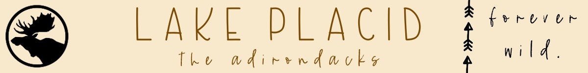

Activites For Every Season
Fall
- Take a ride up the Whiteface Gondola, to see a breath taking view of the Fall Foliage.
- Go to near by farmers markets.
- Go apple picking. The best apples in the world are located right by Lake Placid.
- Hike one of the 46 High Peaks in the Adirondacks. A perfect view of the vibrant red and orange leaves on the trees.
Winter
- When the lake freezes over, take loved ones across the lake to skate on. It feels like a winter wonderland.Or go ice fishing!
- Play ice hockey, either on the lake or in the Olympic rinks.
- Go enjoy all the winter olympic events that happened in 1980 and 1932. This incldues skiing down Whiteface and bobsledding down Mount Van Hoevenberg. There will also be professionals practicing at the Olympic Ski Jumping Complex. It is always excitment to see them go 100mph down the jumping slope.
- Skate the Olympic Oval. It is located right in front of Lake Placid High School.This is where Eric Heiden broke a world record and won 5 gold medals.
Spring
- Once the snow is melted,mountain biking is available on Whiteface.
- Watch and attend horse shows right next to the Olympic torch.
- Take a scenic drive through the Adirondack Mountains and finish the day for a nice dinner at the Mirror Lake Inn.
- Find nearest Maple sugar farm and harvest your own maple syrup. Take home the best maple syrup, maple cream, and maple candy.
Summer
- Go cliff jumping right outside of Lake Placid. Flume Falls.
- Hike multiple mountains including hikes like Indian Head, Mount Jo, and Mount Marcy.
- Go kayaking or paddle boarding on either Lake Placid or Mirror Lake. Then, take a dip in the lake to cool off.
- Take a ride on the Mountain Coaster on Mount Van Hoevenberg. It feels like the bobsled run itself.